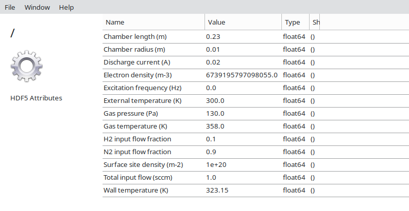

<!DOCTYPE HTML PUBLIC "-//W3C//DTD HTML 4.01 Transitional//EN">
<html>
<head>
<META http-equiv="Content-Type" content="text/html; charset=UTF-8">

<title>Output files</title>
<meta name="generator" content="MATLAB 24.2">
<link rel="schema.DC" href="http://purl.org/dc/elements/1.1/">
<meta name="DC.date" content="2025-04-05">
<meta name="DC.source" content="output.m">
<link rel="stylesheet" type="text/css" href="loki.css">
</head>
<body>
<div class="content">
<h1>Output</h1>
<!--introduction-->
<p>In this field of the setup file the user can define the details of the simulation
output. The code below shows the section of the <tt>'default_lokibc_setup.in'</tt>
file that handles this configuration.</p>
<pre class="codeinput">
<span class="comment">% --- configuration of the output files ---</span>
output:
  isOn: false
  dataFormat: hdf5+txt       <span class="comment">% txt or hdf5 or txt+hdf5</span>
  folder: simulation_chem_1
  dataSets:
<span class="comment">%     - inputs</span>
    - log
    - eedf
    - swarmParameters
    - rateCoefficients
    - powerBalance
<span class="comment">%     - lookUpTables</span>
    - finalDensities
    - finalTemperatures
    - finalParticleBalance
    - finalThermalBalance
    - chemSolutionTime
    - chemParameters
</pre>
<p>
<b>IMPORTANT NOTES:</b>
</p>
<div>
<ul>
<li>LoKI-GM provides log information documenting events relevant to the code
execution, that are displayed in the command window. This information can also be
displayed in the GUI (if activated) and/or saved as text file according to the
output configuration (see below).</li>
<li>The <tt>isOn</tt> parameter allows the user to activate (<tv>true</tv>) or
deactivate (<tv>false</tv>) the output</li>
<li>The <tt>dataFormat</tt> parameter allows the user to select the output format:
text files (<tv>txt</tv>), a single HDF5 file gathering all the information from the
text files (<tv>hdf5</tv>), or both text and HDF5 files (<tv>hdf5+txt</tv>).<br>
<b>The log and setup information are always written as text files.</b><br>
<b>MATLAB&reg; has used HDF5 C library version 1.14.4.3 since release R2024b. Running
older MATLAB&reg; versions may therefore prevent the use of the HDF5 format.</b></li>
<li>In <tt>folder</tt> the user can specify the folder where the datasets of the
simulation output will be saved. This is an optional parameter; if <tt>folder</tt>
is removed, the code will generate a generic name for the output folder, with a
time stamp.<br>
The output folder(s) will be located inside
<tt>[repository folder]/LoKI-GM_26.07/Code/Output/</tt>.</li>
<li>When <tt>isOn</tt> is <tt>true</tt>, <tt>dataSets</tt> is a <b>mandatory</b>
parameter, where the user can specify the information to be saved after each
simulation.<br>
<b>Note</b> that in previous versions this parameter was called <tt>dataFiles</tt>.</li>
</ul>

<h2 id="1">3.5.1 Datasets in text format</h2>

<p>When <b>running LoKI-B as standalone tool</b>, the text-format output (<tv>txt</tv>)
is characterized by
  <ul>
  <li>different <i>E/N</i> values, for <tt>eedfType</tt> = <tv>boltzmann</tv> and
  <i>electron kinetics stationary simulations</i> (see section <a href="Getting-started.html#5">2.5</a>).
  In this case the code generates as many output folders as the number of <i>E/N</i>
  values defined as <tt>reducedField</tt> in the <tt>workingConditions</tt>;</li>
  <li>different <i>t</i> values, for <tt>eedfType</tt> = <tv>boltzmann</tv> and
  <i>electron kinetics time-dependent simulations</i> (see section <a href="Getting-started.html#5">2.5</a>).
  In this case the code generates as many output folders as the number of
  "sampling points" defined within <tt>reducedField</tt> in the <tt>workingConditions</tt>;</li>
  <li>different <i>Tₑ</i> values, for <tt>eedfType</tt> = <tv>prescribedEedf</tv>. In this
  case the code generates as many output folders as the number of <i>Tₑ</i> values defined
  as <tt>electronTemperature</tt> in the <tt>workingConditions</tt>.</li>
  <li>all combinations of the different parameters: <i>E/N</i> or <i>T<sub>e</sub></i>
  (for <i>electron kinetics stationary simulations</i>, when <tt>eedfType</tt> = <tv>boltzmann</tv>
  or <tt>eedfType</tt> = <tv>prescribedEedf</tv>, respectively), or <i>t</i> (for
  <i>electron kinetics time-dependent simulations</i> with <tt>eedfType</tt> = <tv>boltzmann</tv>),
  along with <i>p, T<sub>g</sub>, n<sub>e</sub> and ω/N</i> values. In this case,                                                              the code generates an output folder for each unique combination of parameters. The
  resulting directory structure is organized hierarchically, beginning with the different
  <i>ω/N</i> values and ending with the different <i>E/N</i> values.</li>
  </ul>
  </p>
<p>The available options for <tt>dataSets</tt> are:
  <dl>
  <dt>- <tt>inputs</tt></dt>
  <dd>It copies all the input datafiles (e.g LXCat files; not functions)
  called from the setup file (and also an exact copy of the original setup file itself,
  including all commented / uncommented lines), using the corresponding structure of
  folders.</dd>
  <dt>- <tt>log</tt></dt>
  <dd>It writes the datafile <tt>log.txt</tt>, displaying the log information of the
  code execution.</dd>
  <dt>- <tt>eedf</tt></dt>
  <dd>It writes, for each <tv>boltzmann</tv> (<i>E/N</i> or <i>t</i>) or <tv>prescribedEedf</tv>
  (<i>Tₑ</i>) simulation, the datafile <tt>eedf.txt</tt>, with three columns displaying
  the kinetic energy <i>u</i>, the EEDF <i>f</i> and the first anisotropy <i>f<sup>1</sup></i>
  (only in the case of <tv>boltzmann</tv> simulations), respectively.</dd>
  <dt>- <tt>swarmParameters</tt></dt>
  <dd>It writes, for each <tv>boltzmann</tv> (<i>E/N</i> or <i>t</i>) or
  <tv>prescribedEedf</tv> (<i>Tₑ</i>) simulation, the datafile <tt>swarmParameters.txt</tt>,
  displaying the values of the following quantities (see Reference Manual, [<a href="References.html#R11">11</a>]):
    <ul>
    <li><i>t</i> (only for time-dependent simulations)</li>
    <li><i>E/N</i></li>
    <li><i>Dₑ/N</i></li>
    <li><i>μₑN</i></li>
    <li><i>v<sub>d</sub></i> (only in DC case)</li>
    <li><math><mrow><mi>ℜ</mi><mo form="prefix" stretchy="false">[</mo><msub><mi>μ</mi>
      <mpadded lspace="0"><mi>HF</mi></mpadded></msub><mi>N</mi><mo form="postfix" stretchy="false">]</mo>
    <mo>+</mo></mrow>
    <mrow><mi>ℑ</mi><mo form="prefix" stretchy="false">[</mo><msub><mi>μ</mi>
      <mpadded lspace="0"><mi>HF</mi></mpadded></msub><mi>N</mi><mo form="postfix" stretchy="false">]</mo>
    <mspace width="0.1667em"></mspace><mi>i</mi></mrow></math> (only in HF case)</li>
    <li><i>α/N</i> (only in DC case)</li>
    <li><i>η/N</i> (only in DC case)</li>
    <li>D<sub>ε</sub>/N</li>
    <li>μ<sub>ε</sub>/N</li>
    <li><i>ε</i></li>
    <li><i>uₖ</i></li>
    <li><i>Tₑ &equiv; (2/3)ε</i></li>
    </ul>
  </dd>
  <dt>- <tt>rateCoefficients</tt></dt>
  <dd>It writes, for each <tv>boltzmann</tv> (<i>E/N</i> or <i>t</i>) or
  <tv>prescribedEedf</tv> (<i>Tₑ</i>) simulation, the datafile <tt>rateCoefficients.txt</tt>
  displaying information on rate coefficients (see Reference Manual, [<a href="References.html#R11">11</a>]),
  organized into the following groups:</dd>
  <div>
    <ul>
    <li>e-Kinetics Rate Coefficients, including the inelastic / superelastic rate
    coefficients <i>Cᵢ,ⱼ</i> and <i>Cⱼ,ᵢ</i> calculated from the electron-impact
    cross sections between states <i>i</i> and <i>j &gt; i</i> provided as input
    data, as well as the threshold of the cross sections and the description of
    the reactions;</li>
    <li>e-Kinetics Extra Rate Coefficients, including the inelastic / superelastic
    rate coefficients <i>Cᵢ,ⱼ</i> and <i>Cⱼ,ᵢ</i> calculated from the electron-impact
    extra cross sections between states <i>i</i> and <i>j &gt; i</i> provided as
    input data, as well as the threshold of the cross sections and the description
    of the reactions.</li>
    </ul>
  </div>
  <dt>- <tt>powerBalance</tt></dt>
  <dd>It writes, for each <tv>boltzmann</tv> (<i>E/N</i> or <i>t</i>) or
  <tv>prescribedEedf</tv> (<i>Tₑ</i>) simulation, the datafile <tt>powerBalance.txt</tt>,
  displaying the values of the following electron power-density gains/losses
  per electron at unit gas density (see Reference Manual, [<a href="References.html#R11">11</a>]):
    <ul>
    <li><math><mrow><msub><mpadded lspace="0"><mi mathvariant="normal">Θ</mi></mpadded><mi>E</mi></msub><mi>/</mi><mi>N</mi></mrow></math> (for Joule power)</li>
    <li><math><mrow><msubsup><mpadded lspace="0"><mi mathvariant="normal">Θ</mi></mpadded><mpadded lspace="0"><mi>el</mi></mpadded><mpadded lspace="0"><mi>gain</mi></mpadded></msubsup><mi>/</mi><mi>N</mi><mo separator="true">,</mo><mspace width="0.2778em"></mspace></mrow><mrow><msubsup><mpadded lspace="0"><mi mathvariant="normal">Θ</mi></mpadded><mpadded lspace="0"><mi>el</mi></mpadded><mpadded lspace="0"><mi>loss</mi></mpadded></msubsup><mi>/</mi><mi>N</mi><mo separator="true">,</mo><mspace width="0.2778em"></mspace></mrow><mrow><msub><mpadded lspace="0"><mi mathvariant="normal">Θ</mi></mpadded><mpadded lspace="0"><mi>el</mi></mpadded></msub><mi>/</mi><mi>N</mi><mo>≡</mo></mrow><mrow><msubsup><mpadded lspace="0"><mi mathvariant="normal">Θ</mi></mpadded><mpadded lspace="0"><mi>el</mi></mpadded><mpadded lspace="0"><mi>gain</mi></mpadded></msubsup><mi>/</mi><mi>N</mi><mo>+</mo></mrow><mrow><msubsup><mpadded lspace="0"><mi mathvariant="normal">Θ</mi></mpadded><mpadded lspace="0"><mi>el</mi></mpadded><mpadded lspace="0"><mi>loss</mi></mpadded></msubsup><mi>/</mi><mi>N</mi></mrow></math> (for elastic mechanisms)</li>
    <li><math><mrow><msubsup><mpadded lspace="0"><mi mathvariant="normal">Θ</mi></mpadded><mpadded lspace="0"><mi>CAR</mi></mpadded><mpadded lspace="0"><mi>gain</mi></mpadded></msubsup><mi>/</mi><mi>N</mi><mo separator="true">,</mo><mspace width="0.2778em"></mspace></mrow><mrow><msubsup><mpadded lspace="0"><mi mathvariant="normal">Θ</mi></mpadded><mpadded lspace="0"><mi>CAR</mi></mpadded><mpadded lspace="0"><mi>loss</mi></mpadded></msubsup><mi>/</mi><mi>N</mi><mo separator="true">,</mo><mspace width="0.2778em"></mspace></mrow><mrow><msub><mpadded lspace="0"><mi mathvariant="normal">Θ</mi></mpadded><mpadded lspace="0"><mi>CAR</mi></mpadded></msub><mi>/</mi><mi>N</mi><mo>≡</mo></mrow><mrow><msubsup><mpadded lspace="0"><mi mathvariant="normal">Θ</mi></mpadded><mpadded lspace="0"><mi>CAR</mi></mpadded><mpadded lspace="0"><mi>gain</mi></mpadded></msubsup><mi>/</mi><mi>N</mi><mo>+</mo></mrow><mrow><msubsup><mpadded lspace="0"><mi mathvariant="normal">Θ</mi></mpadded><mpadded lspace="0"><mi>CAR</mi></mpadded><mpadded lspace="0"><mi>loss</mi></mpadded></msubsup><mi>/</mi><mi>N</mi></mrow></math> (for rotational mechanisms)</li>
    <li><math><mrow><msubsup><mpadded lspace="0"><mi mathvariant="normal">Θ</mi></mpadded><mpadded lspace="0"><mi>sup</mi></mpadded><mpadded lspace="0"><mi>gain</mi></mpadded></msubsup><mi>/</mi><mi>N</mi><mo separator="true">,</mo><mspace width="0.2778em"></mspace></mrow><mrow><msubsup><mpadded lspace="0"><mi mathvariant="normal">Θ</mi></mpadded><mpadded lspace="0"><mi>inel</mi></mpadded><mpadded lspace="0"><mi>loss</mi></mpadded></msubsup><mi>/</mi><mi>N</mi><mo separator="true">,</mo><mspace width="0.2778em"></mspace></mrow><mrow><msub><mpadded lspace="0"><mi mathvariant="normal">Θ</mi></mpadded><mrow><mpadded lspace="0"><mi mathvariant="normal">e</mi></mpadded><mpadded lspace="0"><mi mathvariant="normal">l</mi></mpadded><mpadded lspace="0"><mi mathvariant="normal">e</mi></mpadded><mo separator="true">,</mo><mpadded lspace="0"><mi mathvariant="normal">v</mi></mpadded><mpadded lspace="0"><mi mathvariant="normal">i</mi></mpadded><mpadded lspace="0"><mi mathvariant="normal">b</mi></mpadded><mo separator="true">,</mo><mpadded lspace="0"><mi mathvariant="normal">r</mi></mpadded><mpadded lspace="0"><mi mathvariant="normal">o</mi></mpadded><mpadded lspace="0"><mi mathvariant="normal">t</mi></mpadded></mrow></msub><mi>/</mi><mi>N</mi><mo>≡</mo></mrow><mrow><msubsup><mpadded lspace="0"><mi mathvariant="normal">Θ</mi></mpadded><mpadded lspace="0"><mi>sup</mi></mpadded><mpadded lspace="0"><mi>gain</mi></mpadded></msubsup><mi>/</mi><mi>N</mi><mo>+</mo></mrow><mrow><msubsup><mpadded lspace="0"><mi mathvariant="normal">Θ</mi></mpadded><mpadded lspace="0"><mi>inel</mi></mpadded><mpadded lspace="0"><mi>loss</mi></mpadded></msubsup><mi>/</mi><mi>N</mi></mrow></math>
    (for electronic, vibrational, rotational mechanisms) (for electronic, vibrational, rotational mechanisms)</li>
    <li><math><mrow><msub><mpadded lspace="0"><mi mathvariant="normal">Θ</mi></mpadded><mi>ion</mi></msub><mi>/</mi><mi>N</mi></mrow></math> (for ionization mechanisms)</li>
    <li><math><mrow><msub><mpadded lspace="0"><mi mathvariant="normal">Θ</mi></mpadded><mi>att</mi></msub><mi>/</mi><mi>N</mi></mrow></math> (for attachment mechanisms)</li>
    <li><math><mrow><msub><mpadded lspace="0"><mi mathvariant="normal">Θ</mi></mpadded><mi>growth</mi></msub><mi>/</mi><mi>N</mi></mrow></math> (for growth mechanisms).</li>
  </ul>
  It also writes
  <ul>
  <li>the power balance
  <math><mrow><msub><mpadded lspace="0"><mi mathvariant="normal">Θ</mi></mpadded><mpadded lspace="0"><mi>growth</mi></mpadded></msub><mi>/</mi><mi>N</mi><mo>+</mo></mrow><mrow><msub><mpadded lspace="0"><mi mathvariant="normal">Θ</mi></mpadded><mi>E</mi></msub><mi>/</mi><mi>N</mi><mo>+</mo></mrow><mrow><msubsup><mpadded lspace="0"><mi mathvariant="normal">Θ</mi></mpadded><mpadded lspace="0"><mi>coll</mi></mpadded><mpadded lspace="0"><mi>gain</mi></mpadded></msubsup><mi>/</mi><mi>N</mi><mo>+</mo></mrow><mrow><msubsup><mpadded lspace="0"><mi mathvariant="normal">Θ</mi></mpadded><mpadded lspace="0"><mi>coll</mi></mpadded><mpadded lspace="0"><mi>loss</mi></mpadded></msubsup><mi>/</mi><mi>N</mi></mrow></math>
  (with "coll" referring to all collision types). Recall that, in time-dependent simulations, the power balance corresponds to the value of the intrinsic time-change of the electron mean energy, at unit gas density (see Reference Manual, [<a href="References.html#R11">11</a>]);</li>
  <li>the relative power balance (in %)
  <math><mrow><mrow><mo fence="true" form="prefix">[</mo><msub><mpadded lspace="0"><mi mathvariant="normal">Θ</mi></mpadded><mpadded lspace="0"><mi>growth</mi></mpadded></msub><mi>/</mi><mi>N</mi><mo>+</mo><msub><mpadded lspace="0"><mi mathvariant="normal">Θ</mi></mpadded><mi>E</mi></msub><mi>/</mi><mi>N</mi><mo>+</mo><msubsup><mpadded lspace="0"><mi mathvariant="normal">Θ</mi></mpadded><mpadded lspace="0"><mi>coll</mi></mpadded><mpadded lspace="0"><mi>gain</mi></mpadded></msubsup><mi>/</mi><mi>N</mi><mo>+</mo><msubsup><mpadded lspace="0"><mi mathvariant="normal">Θ</mi></mpadded><mpadded lspace="0"><mi>coll</mi></mpadded><mpadded lspace="0"><mi>loss</mi></mpadded></msubsup><mi>/</mi><mi>N</mi><mo fence="true" form="postfix">]</mo></mrow><mi>/</mi><mrow><mo fence="true" form="prefix">[</mo><msub><mpadded lspace="0"><mi mathvariant="normal">Θ</mi></mpadded><mpadded lspace="0"><mi>ref</mi></mpadded></msub><mi>/</mi><mi>N</mi><mo fence="true" form="postfix">]</mo></mrow><mo>×</mo></mrow><mrow><mn>100</mn></mrow></math>.
  Recall that, in time-dependent simulations, the "relative power balance" corresponds to the value of the intrinsic time-change of the electron mean energy divided by the reference power-density per electron (see Reference Manual, [<a href="References.html#R11">11</a>]);</li>
  </ul>
  It also writes, for each gas in the mixture, the gain/loss/net results for the electron power-density associated with the different types of collisions.
  </dd>
  <dt>- <tt>lookUpTables</tt></dt>
  <dd>It writes the following datasets:
    <div>
    <ul>
    <li><tt>lookUpTableSwarm.txt</tt>, containing a table with all the data in the file(s) <tt>swarmParameters.txt</tt> presented in columns, as a function of <i>E/N</i> , or <i>t</i> and <i>E/N</i>, or <i>Tₑ</i> (according to the type of simulations);</li>
    <li><tt>lookUpTableRateCoeff.txt</tt>, containing a table with all the data in the file(s) <tt>rateCoefficients.txt</tt> presented in columns, as a function of <i>E/N</i>, or <i>t</i> and <i>E/N</i>, or <i>Tₑ</i> (according to the type of simulations);</li>
    <li><tt>lookUpTablePower.txt</tt>, containing a table with all the data in the file(s) <tt>powerBalance.txt</tt> presented in columns, as a function of <i>E/N</i>, or <i>t</i> and <i>E/N</i>, or <i>Tₑ</i> (according to the type of simulations);</li>
    <li><tt>lookUpTableEedf.txt</tt>, (<b>only for <i>electron kinetics time-dependent simulations</i></b>) containing a table with all the data in the file(s) <tt>eedf.txt</tt>, where the first column displays the values of <i>t</i>, the first row displays the values of <i>u</i>, and the remainder rows display the values of <i>f</i> for the different simulation times. The following below presents an extract of a typical <tt>lookUpTableEedf.txt</tt> file.
    <center><br>
    <table border=0>
    <tr><th colspan="6">Extract of a typical <tt>lookUpTableEedf.txt</tt> file for a time-dependent simulation</th></tr>
    <tr><td> </td><td>0.005</td><td>0.015</td><td>0.025</td><td>0.035</td><td>...</td></tr>
    <tr><td>0.0000E+00</td><td>220.49</td><td>149.76</td><td>101.72</td><td>69.09</td><td>...</td></tr>
    <tr><td>1.0000E-18</td><td>220.49</td><td>149.76</td><td>101.72</td><td>69.09</td><td>...</td></tr>
    <tr><td>1.0233E-18</td><td>220.49</td><td>149.76</td><td>101.72</td><td>69.09</td><td>...</td></tr>
    <tr><td>1.0471E-18</td><td>220.49</td><td>149.76</td><td>101.72</td><td>69.09</td><td>...</td></tr>
    <tr><td>...</td><td>...</td><td>...</td><td>...</td><td>...</td><td>...</td></tr>
    </table>
    </center>
    </li>
    <li><tt>electronDensityEvolution.txt</tt>, containing a table with the values
    of the electron density <i>nₑ</i> and the electron density variation <i>dnₑ/dt</i>
    presented in columns, as a function of <i>t</i>. This file is written <b>only in
    the case of <i>electron kinetics time-dependent simulations</i></b> in the presence of electron-electron
    collisions, considering a time-dependent electron density <i>nₑ(t)</i> (see section <a href="The_setup_file.html#2">3.2</a>)<br>
    The <tt>lookUpTables</tt> is only written with txt output.<br>
    Note that in previous versions of LoKI this parameter was called <tt>lookUpTable</tt> (with no s).</li>
    </ul>
    </div>
  </dd>
  </dl>
</li>
</ul>
</div>

<div>
<p>When <b>running LoKI-GM for a single simulation</b>, the text-format output (<tv>txt</tv>)
is characterized by
<ul>
<li>a self-consistent <i>E/N</i> value, for <tt>eedfType</tt> = <tv>boltzmann</tv> and
<i>steady-state simulations</i> (see section <a href="Getting_started.html#5">2.5</a>). In
this case LoKI-C and LoKI-B are run in a coupled manner, as described in the Reference Manual
[<a href="References.html#R11">11</a>]. The code generates one output folder with text files
corresponding to the chosen <tt>dataSets</tt> (see Code 8 and description below);</li>
<li>a self-consistent <i>T<sub>e</sub></i> value, for <tt>eedfType</tt> = <tv>prescribedEedf</tv>
and <i>steady-state simulations</i> (see section <a href="Getting_started.html#5">2.5</a>). In
this case LoKI-C and LoKI-B are run in a coupled manner, as described in the Reference Manual
[<a href="References.html#R11">11</a>]. The code generates one output folder with text files
corresponding to the chosen <tt>dataSets</tt> (see Code 8 and description below);</li>
<li>different <i>t</i> values, for <i>quasi-stationary simulations</i> (see section
<a href="Getting_started.html#5">2.5</a>). In this case LoKI-C runs as standalone tool,
and therefore the <tt>dataSets</tt> regarding the specic output of LoKI-B (<tt>eedf.txt</tt>,
<tt>swarmParameters.txt</tt> and <tt>powerBalance.txt</tt>) are not written. The code
generates as many output folders as the number of sampling points defined within
<tt>reducedField</tt> in the <tt>workingConditions</tt>;</li>
<li>a self-consistent <i>E/N</i> value, for <tt>eedfType</tt> = <tv>boltzmann</tv> and
<i>steady-state simulations</i>, in which case LoKI-C and LoKI-B are run in a coupled manner,
followed by time-dependent <i>post-discharge simulations</i> at <i>E/N</i> = 0, in which
case LoKI-C runs as standalone tool (see section <a href="Getting_started.html#5">2.5</a>);
see also Reference Manual [<a href="References.html#R11">11</a>]).
In this case, the code generates one output folder with text files corresponding to the
chosen <tt>dataSets</tt> (see Code 8 and description below). The information in these files
regards the <i>steady-state simulations</i> for the self-consistent <i>E/N</i>, with the
following exceptions: <tt>chemSolutionTime</tt> presents results for calculations
times until <tt>dischargeTime</tt> + <tt>postDischargeTime</tt>; <tt>chemParameters</tt> and
<tt>finalTemperatures</tt> and present results for the final calculation time
<tt>dischargeTime</tt> + <tt>postDischargeTime</tt>.</li>
</ul>
</p>
<p>The available options in dataSets are (see Reference Manual, [<a href="References.html#R11">11</a>]):
  <dl>
  <dt><tt>inputs</tt></dt>
  <dd>It copies all the input datafiles (e.g LXCat files; not functions)
  called from the setup file (and also an exact copy of the original setup file itself,
  including all commented / uncommented lines), using the corresponding structure of
  folders.</dd>
  <dt><tt>log</tt></dt>
  <dd>It writes the datafile <tt>log.txt</tt>, displaying the log information of the
  code execution.</dd>
  <dt><tt>eedf</tt></dt>
  <dd>It writes the datafile <tt>eedf.txt</tt>, with three columns displaying
  the kinetic energy <i>u</i>, the EEDF <i>f</i> and the first anisotropy <i>f<sup>1</sup></i>
  (only in the case of <tv>boltzmann</tv> simulations), respectively.</dd>
  <dt><tt>swarmParameters</tt></dt>
  <dd>It writes the datafile <tt>swarmParameters.txt</tt>,
  displaying the values of the following quantities:
    <ul>
    <li><i>E/N</i></li>
    <li><i>Dₑ/N</i></li>
    <li><i>μₑN</i></li>
    <li><i>v<sub>d</sub></i> (only in DC case)</li>
    <li><math><mrow><mi>ℜ</mi><mo form="prefix" stretchy="false">[</mo><msub><mi>μ</mi>
    <mpadded lspace="0"><mi>HF</mi></mpadded></msub><mi>N</mi><mo form="postfix" stretchy="false">]</mo>
    <mo>+</mo></mrow>
    <mrow><mi>ℑ</mi><mo form="prefix" stretchy="false">[</mo><msub><mi>μ</mi>
    <mpadded lspace="0"><mi>HF</mi></mpadded></msub><mi>N</mi><mo form="postfix" stretchy="false">]</mo>
    <mspace width="0.1667em"></mspace><mi>i</mi></mrow></math> (only in HF case)</li>
    <li><i>α/N</i> (only in DC case)</li>
    <li><i>η/N</i> (only in DC case)</li>
    <li>D<sub>ε</sub>/N</li>
    <li>μ<sub>ε</sub>/N</li>
    <li><i>ε</i></li>
    <li><i>uₖ</i></li>
    <li><i>Tₑ &equiv; (2/3)ε</i></li>
    </ul></dd>
  <dt><tt>rateCoefficients</tt></dt>
  <dd>It writes, for each <tv>boltzmann</tv> (<i>E/N</i> or <i>t</i>) or
  <tv>prescribedEedf</tv> (<i>Tₑ</i>) simulation, the datafile <tt>rateCoefficients.txt</tt>
  displaying information on rate coefficients, organized into the following groups:
  <ul>
  <li>e-Kinetics Rate Coefficients, including the inelastic / superelastic rate
  coefficients <i>Cᵢ,ⱼ</i> and <i>Cⱼ,ᵢ</i> calculated from the electron-impact
  cross sections between states <i>i</i> and <i>j &gt; i</i> provided as input
  data, as well as the threshold of the cross sections and the description of
  the reactions;</li>
  <li>e-Kinetics Extra Rate Coefficients, including the inelastic / superelastic
  rate coefficients <i>Cᵢ,ⱼ</i> and <i>Cⱼ,ᵢ</i> calculated from the electron-impact
  extra cross sections between states <i>i</i> and <i>j &gt; i</i> provided as
  input data, as well as the threshold of the cross sections and the description
  of the reactions.</li>
  <li>Chemistry Rate Coefficients, including the direct/inverse rates <i>R<sub>r</sub></i>
  and <i>R<sub>r</sub><sup>−1</sup></i>, the enthalpies ∆<i>H</i><sub<r</sub>,
  the net rates <i>R<sub>r</sub> - R<sub>r</sub><sup>−1</sup></i>, and the description
  of the reactions <i>r</i>.</li>
  </ul></dd>
  <dt><tt>powerBalance</tt></dt>
  <dd>It writes the datafile <tt>powerBalance.txt</tt>, displaying the values of the
  following electron power-density gains/losses (per electron at unit gas density):
    <ul>
    <li><math><mrow><msub><mpadded lspace="0"><mi mathvariant="normal">Θ</mi></mpadded><mi>E</mi></msub><mi>/</mi><mi>N</mi></mrow></math> (for Joule power)</li>
    <li><math><mrow><msubsup><mpadded lspace="0"><mi mathvariant="normal">Θ</mi></mpadded><mpadded lspace="0"><mi>el</mi></mpadded><mpadded lspace="0"><mi>gain</mi></mpadded></msubsup><mi>/</mi><mi>N</mi><mo separator="true">,</mo><mspace width="0.2778em"></mspace></mrow><mrow><msubsup><mpadded lspace="0"><mi mathvariant="normal">Θ</mi></mpadded><mpadded lspace="0"><mi>el</mi></mpadded><mpadded lspace="0"><mi>loss</mi></mpadded></msubsup><mi>/</mi><mi>N</mi><mo separator="true">,</mo><mspace width="0.2778em"></mspace></mrow><mrow><msub><mpadded lspace="0"><mi mathvariant="normal">Θ</mi></mpadded><mpadded lspace="0"><mi>el</mi></mpadded></msub><mi>/</mi><mi>N</mi><mo>≡</mo></mrow><mrow><msubsup><mpadded lspace="0"><mi mathvariant="normal">Θ</mi></mpadded><mpadded lspace="0"><mi>el</mi></mpadded><mpadded lspace="0"><mi>gain</mi></mpadded></msubsup><mi>/</mi><mi>N</mi><mo>+</mo></mrow><mrow><msubsup><mpadded lspace="0"><mi mathvariant="normal">Θ</mi></mpadded><mpadded lspace="0"><mi>el</mi></mpadded><mpadded lspace="0"><mi>loss</mi></mpadded></msubsup><mi>/</mi><mi>N</mi></mrow></math> (for elastic mechanisms)</li>
    <li><math><mrow><msubsup><mpadded lspace="0"><mi mathvariant="normal">Θ</mi></mpadded><mpadded lspace="0"><mi>CAR</mi></mpadded><mpadded lspace="0"><mi>gain</mi></mpadded></msubsup><mi>/</mi><mi>N</mi><mo separator="true">,</mo><mspace width="0.2778em"></mspace></mrow><mrow><msubsup><mpadded lspace="0"><mi mathvariant="normal">Θ</mi></mpadded><mpadded lspace="0"><mi>CAR</mi></mpadded><mpadded lspace="0"><mi>loss</mi></mpadded></msubsup><mi>/</mi><mi>N</mi><mo separator="true">,</mo><mspace width="0.2778em"></mspace></mrow><mrow><msub><mpadded lspace="0"><mi mathvariant="normal">Θ</mi></mpadded><mpadded lspace="0"><mi>CAR</mi></mpadded></msub><mi>/</mi><mi>N</mi><mo>≡</mo></mrow><mrow><msubsup><mpadded lspace="0"><mi mathvariant="normal">Θ</mi></mpadded><mpadded lspace="0"><mi>CAR</mi></mpadded><mpadded lspace="0"><mi>gain</mi></mpadded></msubsup><mi>/</mi><mi>N</mi><mo>+</mo></mrow><mrow><msubsup><mpadded lspace="0"><mi mathvariant="normal">Θ</mi></mpadded><mpadded lspace="0"><mi>CAR</mi></mpadded><mpadded lspace="0"><mi>loss</mi></mpadded></msubsup><mi>/</mi><mi>N</mi></mrow></math> (for rotational mechanisms)</li>
    <li><math><mrow><msubsup><mpadded lspace="0"><mi mathvariant="normal">Θ</mi></mpadded><mpadded lspace="0"><mi>sup</mi></mpadded><mpadded lspace="0"><mi>gain</mi></mpadded></msubsup><mi>/</mi><mi>N</mi><mo separator="true">,</mo><mspace width="0.2778em"></mspace></mrow><mrow><msubsup><mpadded lspace="0"><mi mathvariant="normal">Θ</mi></mpadded><mpadded lspace="0"><mi>inel</mi></mpadded><mpadded lspace="0"><mi>loss</mi></mpadded></msubsup><mi>/</mi><mi>N</mi><mo separator="true">,</mo><mspace width="0.2778em"></mspace></mrow><mrow><msub><mpadded lspace="0"><mi mathvariant="normal">Θ</mi></mpadded><mrow><mpadded lspace="0"><mi mathvariant="normal">e</mi></mpadded><mpadded lspace="0"><mi mathvariant="normal">l</mi></mpadded><mpadded lspace="0"><mi mathvariant="normal">e</mi></mpadded><mo separator="true">,</mo><mpadded lspace="0"><mi mathvariant="normal">v</mi></mpadded><mpadded lspace="0"><mi mathvariant="normal">i</mi></mpadded><mpadded lspace="0"><mi mathvariant="normal">b</mi></mpadded><mo separator="true">,</mo><mpadded lspace="0"><mi mathvariant="normal">r</mi></mpadded><mpadded lspace="0"><mi mathvariant="normal">o</mi></mpadded><mpadded lspace="0"><mi mathvariant="normal">t</mi></mpadded></mrow></msub><mi>/</mi><mi>N</mi><mo>≡</mo></mrow><mrow><msubsup><mpadded lspace="0"><mi mathvariant="normal">Θ</mi></mpadded><mpadded lspace="0"><mi>sup</mi></mpadded><mpadded lspace="0"><mi>gain</mi></mpadded></msubsup><mi>/</mi><mi>N</mi><mo>+</mo></mrow><mrow><msubsup><mpadded lspace="0"><mi mathvariant="normal">Θ</mi></mpadded><mpadded lspace="0"><mi>inel</mi></mpadded><mpadded lspace="0"><mi>loss</mi></mpadded></msubsup><mi>/</mi><mi>N</mi></mrow></math>
    (for electronic, vibrational, rotational mechanisms) (for electronic, vibrational, rotational mechanisms)</li>
    <li><math><mrow><msub><mpadded lspace="0"><mi mathvariant="normal">Θ</mi></mpadded><mi>ion</mi></msub><mi>/</mi><mi>N</mi></mrow></math> (for ionization mechanisms)</li>
    <li><math><mrow><msub><mpadded lspace="0"><mi mathvariant="normal">Θ</mi></mpadded><mi>att</mi></msub><mi>/</mi><mi>N</mi></mrow></math> (for attachment mechanisms)</li>
    <li><math><mrow><msub><mpadded lspace="0"><mi mathvariant="normal">Θ</mi></mpadded><mi>growth</mi></msub><mi>/</mi><mi>N</mi></mrow></math> (for growth mechanisms).</li>
    </ul>
    It also writes (see Reference Manual [<a href="References.html#R11">11</a>])
    <ul>
    <li>the power balance
    <math><mrow><msub><mpadded lspace="0"><mi mathvariant="normal">Θ</mi></mpadded><mpadded lspace="0"><mi>growth</mi></mpadded></msub><mi>/</mi><mi>N</mi><mo>+</mo></mrow><mrow><msub><mpadded lspace="0"><mi mathvariant="normal">Θ</mi></mpadded><mi>E</mi></msub><mi>/</mi><mi>N</mi><mo>+</mo></mrow><mrow><msubsup><mpadded lspace="0"><mi mathvariant="normal">Θ</mi></mpadded><mpadded lspace="0"><mi>coll</mi></mpadded><mpadded lspace="0"><mi>gain</mi></mpadded></msubsup><mi>/</mi><mi>N</mi><mo>+</mo></mrow><mrow><msubsup><mpadded lspace="0"><mi mathvariant="normal">Θ</mi></mpadded><mpadded lspace="0"><mi>coll</mi></mpadded><mpadded lspace="0"><mi>loss</mi></mpadded></msubsup><mi>/</mi><mi>N</mi></mrow></math>
    (with "coll" referring to all collision types);</li>
    <li>the relative power balance (in %)
    <math><mrow><mrow><mo fence="true" form="prefix">[</mo><msub><mpadded lspace="0"><mi mathvariant="normal">Θ</mi></mpadded><mpadded lspace="0"><mi>growth</mi></mpadded></msub><mi>/</mi><mi>N</mi><mo>+</mo><msub><mpadded lspace="0"><mi mathvariant="normal">Θ</mi></mpadded><mi>E</mi></msub><mi>/</mi><mi>N</mi><mo>+</mo><msubsup><mpadded lspace="0"><mi mathvariant="normal">Θ</mi></mpadded><mpadded lspace="0"><mi>coll</mi></mpadded><mpadded lspace="0"><mi>gain</mi></mpadded></msubsup><mi>/</mi><mi>N</mi><mo>+</mo><msubsup><mpadded lspace="0"><mi mathvariant="normal">Θ</mi></mpadded><mpadded lspace="0"><mi>coll</mi></mpadded><mpadded lspace="0"><mi>loss</mi></mpadded></msubsup><mi>/</mi><mi>N</mi><mo fence="true" form="postfix">]</mo></mrow><mi>/</mi><mrow><mo fence="true" form="prefix">[</mo><msub><mpadded lspace="0"><mi mathvariant="normal">Θ</mi></mpadded><mpadded lspace="0"><mi>ref</mi></mpadded></msub><mi>/</mi><mi>N</mi><mo fence="true" form="postfix">]</mo></mrow><mo>×</mo></mrow><mrow><mn>100</mn></mrow></math>;</li>
    </ul>
    It also writes, for each gas in the mixture, the gain/loss/net results for the electron power-density associated with the different types of collisions.</dd>
  <dt><tt>finalDensities</tt></dt>
  <dd>It writes the datafile <tt>chemFinalDensities.txt</tt> displaying, for each state intervening
  in the chemistry calculations, the steady-state values of its absolute density, population, and
  relative creation/destruction rate-balance (see Reference Manual [<a href="References.html#R11">11</a>]).
  In this file, it also writes the relative percentage of the different parent states in
  the final mixture.<br>
  It also writes the datafile <tt>electronKineticsFinalPopulations.txt</tt>, displaying the
  steady-state populations of each state intervening in the electron kinetics calculations.
  In this file, it also writes the final relative percentages of the dierent parent states used
  in the electron kinetics calculations.</dd>
  <dt><tt>finalTemperatures</tt></dt>
  <dd>It writes the datafile <tt>finalTemperatures.txt</tt> displaying the final values of the
  gas-related temperatures (<em>e.g.</em> <i>T<sub>g</sub>, T<sub>w</sub>, T<sub>ext</sub></i>, ...)
  that can be present in the <tt>workingConditions</tt> object.<br>
  Note that, depending on the conguration of the thermal model, the values of the temperatures
  displayed in <tt>finalTemperatures.txt</tt> may differ from those defined by the user as working conditions in the <tt>setup.in</tt> file (in general, used as initial conditions).</dd>
  <dt><tt>finalParticleBalance</tt></dt>
  <dd>It writes the datafile <tt>finalParticleBalance.txt</tt> displaying, for each state
  intervening in the chemistry calculations (separated in groups according to the parent states),
  the steady-state values of the rates, fractional contribution (in percentage), and relative
  rate-balance (in percentage) for the different creation/destruction reactions aecting this
  state (see Reference Manual [<a href="References.html#R11">11</a>]).</dd>
  <dt><tt>finalThermalBalance</tt></dt>
  <dd>It writes the datafile <tt>finalThermalBalance.txt</tt> displaying the values of the
  following terms of the thermal balance equation (see Reference Manual
  [<a href="References.html#R11">11</a>]):
    <ul>
    <li>conduction</li>
    <li>electron elastic collisions</li>
    <li>volume source</li>
    <li>wall source</li>
    </ul>
    <b>The option <tv>finalThermalBalance</tv> is supported only if the thermal model is activated.</b></dd>
  <dt><tt>chemSolutionTime</tt></dt>
  <dd>It writes the datafile <tt>chemSolutionTime.txt</tt>, with several columns displaying
  the calculation time <i>t</i>, the relevant gas-related temperatures (at time <i>t</i>) if the
  thermal model is activated (or the gas temperature if the the thermal model is not activated),
  and the absolute densities (at time <i>t</i>) of the different states intervening in the
  chemistry calculations, respectively.</dd>
  <dt><tt>chemParameters</tt></dt>
  <dd>It writes the datafile <tt>chemParameters.txt</tt>, displaying the values of the
  following quantities:
    <ul>
    <li>Reduced electric field (last value used in the simulations)</li>
    <li>Target gas pressure (as defined in the <tt>workingConditions</tt>)</li>
    <li>Final gas pressure (last value obtained in the simulations)</li>
    <li>Final gas temperature (last value obtained in the simulations)</li>
    <li>Final gas density (as obtained using the final values of the gas pressure and
        gas temperature)</li>
    <li>Total input flow (as defined in the <tt>workingConditions</tt>)</li>
    <li>Total output flow (as defined in the workingConditions or obtained in the simulations)</li>
    <li>Target electron density</li>
      <ul>
      <li>(for steady-state simulations, the value defined in the <tt>workingConditions</tt>,
           with the corresponding relative error, if <tt>convergenceParameter</tt> is
           <tv>electronDensity</tv>)</li>
      <li>(for time-dependent simulations, the last value obtained in the simulations)</li>
      </ul>
      <li>Final electron density (for steady-state simulations, the last value obtained in the
          simulations, with the corresponding relative error, if <tt>convergenceParameter</tt> is
          <tv>dischargeCurrent</tv> or <tv>dischargePowerDensity</tv></li>
      <li>Target discharge current (for steady-state simulations, as defined in the
          <tt>workingConditions</tt>, if <tt>convergenceParameter</tt> is <tv>dischargeCurrent</tv>)</li>
      <li>Final discharge current (for steady-state simulations, the last value obtained in
          the simulations, with the corresponding relative error, if <tt>convergenceParameter</tt>
          is <tv>dischargeCurrent</tv>)</li>
      <li>Target discharge power density (for steady-state simulations, as defined in
          the <tt>workingConditions</tt>, if <tt>convergenceParameter</tt> is
          <tv>dischargePowerDensity</tv>)</li>
      <li>Final discharge power density (for steady-state simulations, the last value obtained
          in the simulations, with the corresponding relative error, if <tt>convergenceParameter</tt>
          is <tv>dischargePowerDensity</tv>)</li>
    </ul>
  </dd>
  </dl>

</p>
</div>


<h2 id="2">3.5.2 Datasets in Hdf5 format</h2>

<p>The <tt>hdf5</tt> format [<a href="References.html#R14">14</a>] organizes all
the results in a single file. The access to the data can be done through the Python
scripts provided in the utilities folder or using one of the several interfaces
available [<a href="References.html#R23">23</a>] or adopting filters on tools like
MATLAB&reg; or Origin&reg;.<br>
Currently, HDF5 output is supported only for <i>electron kinetics simulations</i>
(using LoKI-B as standalone tool) and <i>steady-state simulations</i> (in which LoKI-C
and LoKI-B are run in a coupled manner). Moreover, HDF5 support to multiple simulations
in LoKI-B is currently limited to <i>electron kinetics stationary simulations</i>.
Support for the remaining simulation types available in LoKI-GM is under development.</p>

<p><b>In the following, the description of an HDF5 le organization is based on its
visualization using HDFCompass [<a href="References.html#R24">24</a>].</b></p>

<p>The electron kinetics (from LoKI-B) and the chemical results (from LoKI-C) are organized
in the main groups, <tt>electronKinetics</tt> and <tt>chemistry</tt>, respectively, under
a root group (<tt>'/'</tt>). A <i>group</i> is conceptually equivalent to a folder with
certain <i>attributes</i>, within which the <i>datasets</i> are organized. The attributes
of the root group correspond to the relevant parameters of the working
conditions (see the figure).</p>
<p>
 </p>
<p>The <tt>electronKinetics</tt> group contains six or seven datasets:</p>
<div>
<dl>
<dt><tt>reducedField</tt></dt>
<dd>A table with the value(s) of the reduced field (or the corresponding
electron temperature, see below). This table is link to other datasets, corresponding to
one of their axis. The shape and dimensions of this table depends on the problem under study.<br>
When <b>running LoKI-B as standalone tool</b>, for <tt>eedfType</tt> = <tv>boltzmann</tv> and
<i>electron kinetics stationary simulations</i>, the table is composed by a single row with
different <i>E/N</i> values defined as <rr>reducedField</tt> in the <tt>workingConditions</tt>.<br>
When <b>running LoKI-B as standalone tool</b>, for <tt>eedfType</tt> = <tv>boltzmann</tv> and
<i>electron kinetics time-dependent simulations</i>, the table has two rows with the <i>t</i>
values and the <i>E/N</i> values. In this case the rows contains as many cells (columns) as the
number of <i>E/N</i> values defined as <rr>reducedField</tt> in the <tt>workingConditions</tt>.<br>
When <b>running LoKI-B as standalone tool</b>, for <tt>eedfType</tt> = <tv>prescribedEedf</tv>,
the table is composed by a single row with different <i>T<sub>e</sub></i> values used in the
simulations. In this case the row contains as many cells (columns) as the number of
<i>T<sub>e</sub></i> defined as <tt>electronTemperature</tt> in the <tt>workingConditions</tt>.<br>

When <b>running LoKI-GM</b>, for <tt>eedfType</tt> = <tv>boltzmann</tv> or <tt>eedfType</tt> =
<tv>prescribedEedf</tv> and a single <i>steady-state simulation</i>, the table has a single
cell with the final self-consistent value of <i>E/N</i> or <i>T<sub>e</sub></i>, respectively.<br>
When <b>running LoKI-GM</b>, for a single <i>post-discharge simulation</i>, the table has a
single cell with the final value <i>E/N</i> = 0 considered.<br>
The units of each column are indicated in the dataset attributes.
<br>
<b>IMPORTANT NOTE REGARDING SIMULATIONS FOR MULTIPLE PARAMETERS</b><br>
As mentioned, LoKI-B can be <b>run as a standalone tool</b> for multiple simulations by
specifying arrays of values for parameters such as <tt>reducedField</tt> or <tt>electronTemperature</tt>,
as well as <tt>excitationFrequency</tt>, and/or <tt>electronDensity</tt>, and/or <tt>gasPressure</tt>,
and/or <tt>gasTemperature</tt>.<br>
In such cases, the <tt>electronKinetics</tt> group may additionally contain datasets describing
these parameters, alphabetically ordered:
  <ul>
  <li><tt>electronDensity</tt></li>
  <li><tt>excitationFrequency</tt></li>
  <li><tt>gasPressure</tt></li>
  <li><tt>gasTemperature</tt></li>
  </ul>
Each dataset consists of a single-row table whose cells (columns) contain the values of
the corresponding parameter for each simulation, as specied in <tt>workingConditions</tt>.
In this case, the information on that parameter is removed from the <i>attributes</i> of
the root group.<br>
When LoKI-B is run for multiple simulations involving <i>N<sub>ω</sub></i> values of
<tt>excitationFrequency</tt>, <i>N<sub>ne</sub></i> values of <tt>electronDensity</tt>,
<i>N<sub>p</sub></i> values of <tt>gasPressure</tt>, and <i>N<sub>Tg</sub></i> values of
<tt>gasTemperature</tt>, the size of each output dataset is increased by a factor of
<i>N<sub>ω</sub>×N<sub>ne</sub>×N<sub>p</sub>×N<sub>Tg</sub></i>. Note that the additional
tables (pages) containing the results follow the order indicated here: <tt>excitationFrequency</tt>,
<tt>electronDensity</tt>, <tt>gasPressure</tt>, <tt>gasTemperature</tt>. This information
allows the user to identify the simulation conditions associated with each page of a
given dataset. Note further that this order is not alphabetic, so it diers from that used
for the corresponding parameter values as described above.<br>
In the remainder of this section, we assume <i>N<sub>ω</sub> = N<sub>ne</sub> = N<sub>p</sub>
= N<sub>Tg</sub> =</i> 1 when describing the structure and contents of the output datasets.
</dd>

<dt><tt>eedf</tt></dt>
<dd>A 3d dataset gathering the <i>N</i> values of the kinetic energy <i>u</i>, the EEDF <i>f</i>
and the first anisotropy <i>f<sup>1</sup></i> (only in the case of <tv>boltzmann</tv>
simulations), respectively, written in a three-column table (page) for each <tv>boltzmann</tv>
(<i>E/N</i> or <i>t</i>) or <tv>prescribedEedf</tv> (<i>T<sub>e</sub></i>) simulation.<br>
The dataset size is N<sub>E/N</sub> &times; N &times; 3, with <i>N<sub>E/N</sub></i> the number
of <i>E/N</i> or <i>T<sub>e</sub></i> values considered in the output.<br>
The units of each column are indicated in the attributes;</dd>

<dt><tt>swarmParameters</tt></dt>
<dd>A 2d table with the value of the swarm parameters, written for each <tv>boltzmann</tv>
(<i>E/N</i> or <i>t</i>) or <tv>prescribedEedf</tv> (<i>T<sub>e</sub></i>) simulation, in
the following order:<br>
<i>ε, u<sub>k</sub>, T<sub>e</sub></i> or <i>E/N, v<sub>d</sub>, μ<sub>e</sub>N, D<sub>e</sub>N,
μ<sub>ε</sub>N, D<sub>ε</sub>N, α/N, η/N</i>.<br>
<i>T<sub>e</sub></i> or <i>E/N</i> are written for <tv>boltzmann</tv> or <tv>prescribedEedf</tv>
simulations, respectively.<br>
The dataset's size is N<sub>E/N</sub> &times; 10 for a DC case or N<sub>E/N</sub> &times; 8
for an HF case, where <i>v<sub>d</sub></i>, <i>α/N</i> and <i>η/N</i> are not written.<br>
The units of each column are indicated in the dataset attributes.</dd>

<dt><tt>rateCoefficients</tt></dt>
<dd>A 3d dataset with information on the rate coefficients of the collisional process
considered in the electron kinetics, written in a table (page) for each <tv>boltzamnn</tv>
(<i>E/N</i> or <i>t</i>) or <tv>prescribedEedf</tv> (<i>T<sub>e</sub></i>) simulation. The
table has five columns displaying
the process id, the inelastic rate coefficient, the corresponding superelastic
rate coefficient, the cross section threshold and the description of the collisional process.<br>
The dataset's size is <i>N<sub>proc</sub></i> &times; <i>N<sub>E/N</sub></i> &times; 5, with
<i>N<sub>proc</sub></i> the number of processes in the electron kinetics.<br>
The units of each column are indicated in the dataset attributes.</dd>

<dt><tt>extraRateCoefficients</tt></dt>
<dd>A 3d dataset with information on the rate coefficients of the extra collisional process
considered (although not used in the electron kinetics), written in a table (page) for each <tv>boltzamnn</tv> (<i>E/N</i> or <i>t</i>) or
<tv>prescribedEedf</tv> (<i>T<sub>e</sub></i>) simulation. The table has five columns displaying
the process id, the inelastic rate coefficient, the corresponding superelastic
rate coefficient, the cross section threshold and the description of the collisional process.<br>
The dataset's size is <i>N<sub>proc</sub></i> &times; <i>N<sub>E/N</sub></i> &times; 5, with
<i>N<sub>proc</sub></i> the number of processes in the electron kinetics.<br>
The units of each column are indicated in the dataset attributes.
</dd>

<dt><tt>powerBalanceSummary</tt></dt>
<dd>A 3d dataset with the electron power-density gain/losses, per electron at unit gas density
(see Reference Manual [<a href="References.html#R11">11</a>]), written for each <tv>boltzamnn</tv>
(<i>E/N</i> or <i>t</i>) or <tv>prescribedEedf</tv> (<i>T<sub>e</sub></i>) simulation, in
the following order (ten-column table):<br>
<span class="keyword">Field, Elastic, CAR, Rotational, Vibrational, Electronic, Ionisation, Attachment,
eDensGrowth</span>, and <span class="keyword">Balance</span>.<br>
The dataset has three tables (pages) displaying, for each process (if applicable): the
net power-density (gain+losses), the power-density gain, the power-density loss, respectively.
The power balance is displayed in only two pages, showing absolute and relative values, respectively.<br>
The dataset's size is 3 &times; <i>N<sub>E/N</sub></i> &times; 10.<br>
The units of each column are indicated in the dataset attributes.</dd>

<dt><tt>powerBalanceGases</tt></dt>
<dd>
A multidimensional dataset with the electron power-density gains/losses, per electron at unit
gas density transferred to each gas in the mixture, written for each <tv>boltzmann</tv> (<i>E/N</i>
or <i>t</i>) or <tv>prescribedEedf</tv> (<i>T<sub>e</sub></i>) simulation, for the following
collisional processes (ve columns):<br>
<span class="keyword">rotColl, vibColl, eleColl, ionColl</span>, and <span class="keyword">attColl</span>.<br>
The dataset has <i>N<sub>gas</sub></i> &times; 3 tables (pages) displaying, for each gas
(in a total of <i>N<sub>gas</sub></i>) and for each process (if applicable): the net
power-density (gain+loss), the power-density gain, and the power-density loss, respectively.<br>
The dataset's total size is <i>N<sub>gas</sub></i> &times; 3 &times; <i>N<sub>E/N</sub></i> × 5.<br>
The units of each column are indicated in the dataset attributes.</dd>
</dl>

<p>The <tt>chemistry</tt> group is created exclusively for LoKI-GM simulations. It contains
two datasets and three groups.</p>
<p>The datasets are the following:
<dl>
<dt><tt>chemSolutionTime</tt></dt>
<dd>A 3d dataset with information on the solution of the chemistry calculations, written
in a table (page) for each <tv>boltzmann</tv> (<i>E/N</i>) or <tv>prescribedEedf</tv>
(<i>T<sub>e</sub></i>) simulation. The table has a variable number of columns
displaying the simulation <tt>Time</tt>, <tt>GasTemp</tt>, <tt>NearWallTemp</tt>, and
the absolute densities of the <i>N<sub>vol</sub> + N<sub>wall</sub></i> volume and
surface states intervening in the chemistry calculations.<br>
The dataset's size is <i>N<sub>E/N</sub> × N<sub>time</sub> × (3 + N<sub>vol</sub> +
N<sub>wall</sub>)</i>, where <i>N<sub>time</sub></i> is the number of time-steps considered
in the output.<br>
The units of each column are indicated in the dataset attributes.</dd>
<dt><tt>rateCoefficients</tt></dt>
<dd>A 3d dataset with information on the rate coecients of the kinetic reactions considered
in the chemistry calculations, written in a table (page) for each <tv>boltzmann</tv> (<i>E/N</i>)
or <tv>prescribedEedf</tv> (<i>T<sub>e</sub></i>) simulation. The table has six columns
displaying, for each reaction, the id (<tt>rate_id</tt>), the direct rate coefficient
(<tt>dir_coeff</tt>), the reverse rate coefficient (<tt>inv_coeff</tt>), the enthalpy
(<tt>enthalpy</tt>), the net rate (<tt>net_rate</tt>) and the description (<tt>description</tt>).<br>
The dataset's size is <i>N<sub>E/N</sub> × N<sub>reac</sub> × 6</i>, with <i>N<sub>reac</sub></i>
the number of kinetic reactions in the chemical model.<br>
The units of each column are indicated in the dataset attributes.</dd>
</dl>
</p>
<p>The groups are the following:
  <dl>
  <dt><tt>electronKineticsPopulations</tt></dt>
  <dd>This group includes, for each gas intervening in the electron kinetics calculations,
  a dataset with the steady-state populations of the excited neutral and ion states with
  the gas (parent state). Every 3d dataset is written in a table (page) for each <tv>boltzmann</tv>
  (<i>E/N</i>) or <tv>prescribedEedf</tv> (<i>T<sub>e</sub></i>) simulation. The table has
  two columns displaying the name of the <tt>Species</tt> and the values of the <tt>Population</tt>.
  The attribute of each dataset is the final relative percentage of the parent state used in
  the electron kinetics calculations.<br>
  The size of each dataset is <i>N<sub>E/N</sub> × N<sub>states</sub></i> × 2, with
  <i>N<sub>states</sub></i> the corresponding number of states.</dd>
  <dt><tt>finalDensities</tt></dt>
  <dd>This group includes, for each gas intervening in the electron kinetics calculations,
  a dataset with the densities and populations of the excited neutral and ion states with
  the gas (parent state). Every 3d dataset is written in a table (page) for each <tv>boltzmann</tv>
  (<i>E/N</i>) or <tv>prescribedEedf</tv> (<i>T<sub>e</sub></i>) simulation. The table has
  four columns displaying the name of the <tt>Species</tt> and the values of absolute density
  (<tt>Abs.Density</tt>), population (<tt>Population</tt>) and relative creation/destruction
  rate-balance (<tt>Balance</tt>).<br>
  The size of each dataset is <i>N<sub>E/N</sub> × N<sub>states</sub></i> × 4, with
  <i>N<sub>states</sub></i> the corresponding number of states.<br>
  The units of each column are indicated in the dataset attributes.</dd>
  <dt><tt>particleBalance</tt></dt>
  <dd>This group includes, for each gas intervening in the chemistry calculations and for
  each <tv>boltzmann</tv> (<i>E/N</i>) or <tv>prescribedEedf</tv> (<i>T<sub>e</sub></i>) simulation,
  a dataset with the steady-state values of the rates and the fractional contribution
  (in percentage) for the different creation/destruction reactions affecting the excited
  neutral and ion states of the gas (parent state). Every multidimensional dataset has
  <i>N<sub>states</sub></i> × 2 × N<sub>reac</sub> × 3 tables (pages) displaying, for each
  state of the gas (in a total of <i>N<sub>states</sub></i>) and for each creation/destruction
  reaction (in a total of 2 × <i>N<sub>reac</sub></i>): the description of the reaction
  responsible for the creation/destruction of the state (<tt>Reaction</tt>), the
  creation/destruction rate (<tt>Rate</tt>) and the fractional contribution of the reaction
  (in percentage) for the creation/destruction of the state (<tt>Contribution</tt>).<br>
  The size of each dataset is <i>N<sub>E/N</sub> × N<sub>states</sub></i> × 2 ×
  N<sub>reac</sub> × 3</i>.<br>
  The units of each column are indicated in the dataset attributes.</dd>
  </dl>
</p>

</div>
<p class="footer">
<br>
<a href="https://www.mathworks.com/products/matlab/">Published with MATLAB&reg; R2024b</a>
<br>
</p>
</div>

</body>
</html>
